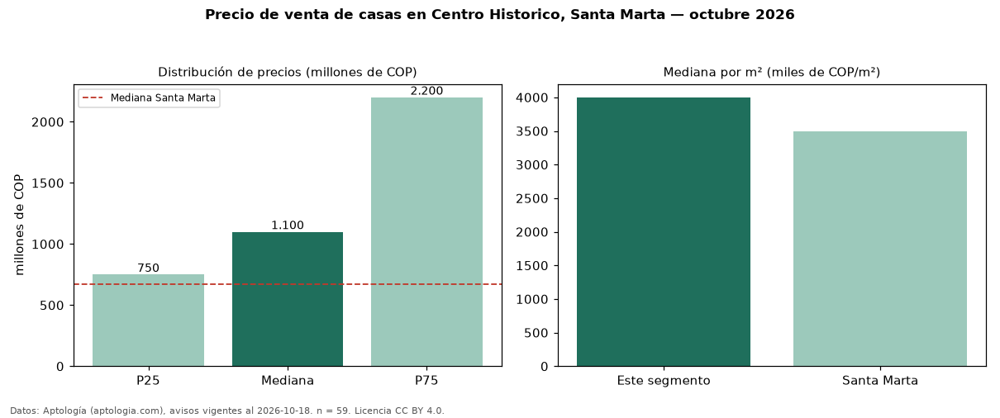

Precio de venta de casas en Centro Historico, Santa Marta — octubre 2026
COP 1,10 mil millones es el precio mediano de casas en venta en Centro Historico, Santa Marta (n = 59 avisos). Frente a la mediana de Santa Marta para casas (COP 670 millones), queda 64 % por encima. Por metro cuadrado, la mediana es COP 4,00 millones/m² (n = 59 avisos con área), 15 % por encima de Santa Marta (COP 3,49 millones/m²). La mitad central de los avisos va de COP 750 millones a COP 2,20 mil millones (razón 2,9), una dispersión alta. El área mediana anunciada es 312 m². El segmento con más oferta es el de 3 o más habitaciones (53 avisos, mediana COP 1,10 mil millones). Por precio mediano es el puesto 2 de 9 barrios de Santa Marta con al menos 30 avisos de casas en venta (COP): en la franja media. El estrato más frecuente es 4 (55 % de los avisos con estrato). Datos: Aptología (aptologia.com), CC BY 4.0 — https://www.aptologia.com/casas-en-venta/santa-marta/centro-historico. Archivos: PDF, CSV con las cifras y gráfica PNG.

| Avisos únicos | 59 |
|---|---|
| Percentil 25 | COP 750.000.000 |
| Mediana | COP 1.100.000.000 |
| Percentil 75 | COP 2.200.000.000 |
| Mediana por m² | COP 4.000.000 |
Fuente: avisos vigentes de portales inmobiliarios recopilados por Aptología, deduplicados (mínimo 30 avisos únicos por celda). Precios pedidos, no cerrados. Fecha: 2026-10-18.